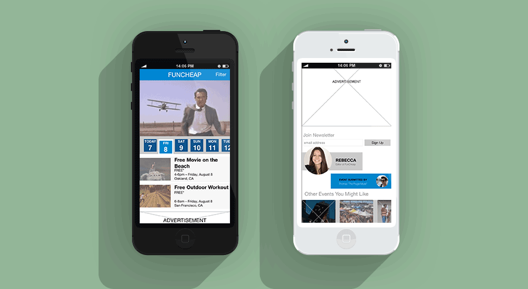
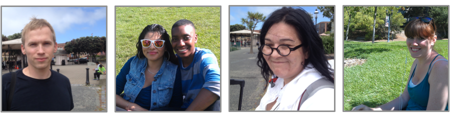
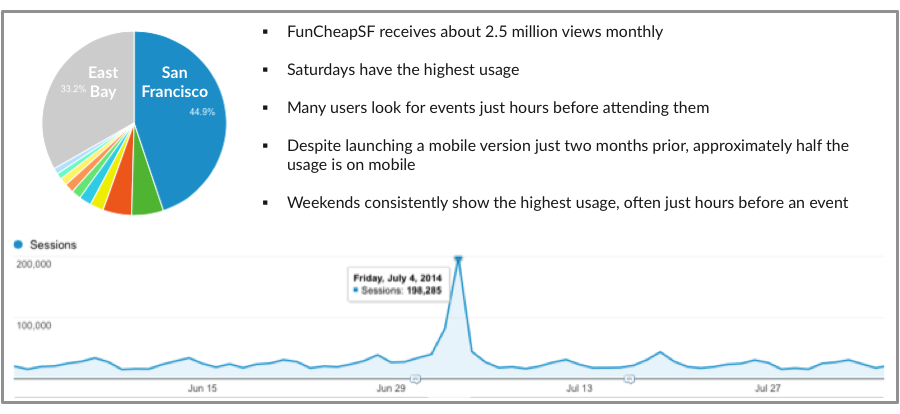
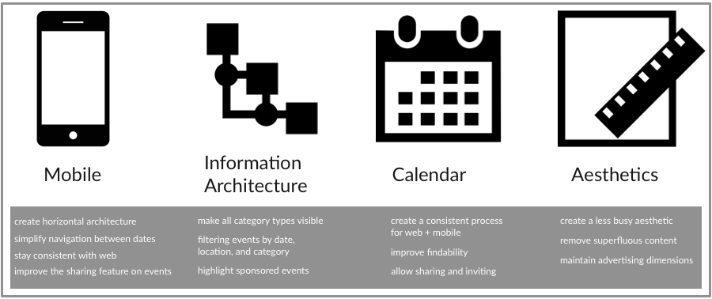
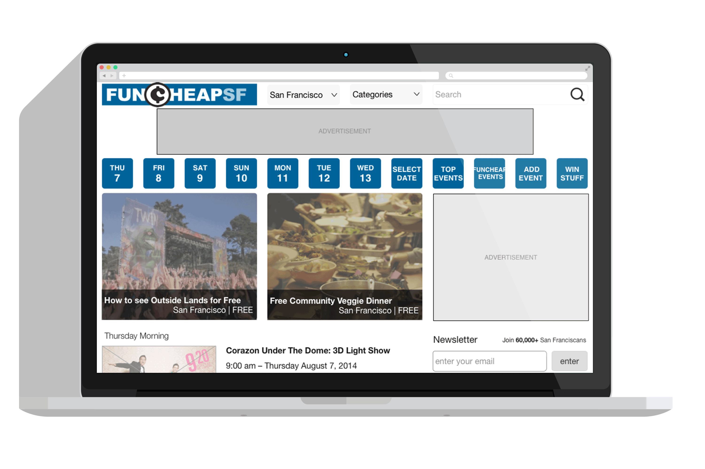

FunCheapSF
Mobile First Redesign

PROJECT BRIEF
FunCheapSF started as a passion proejct but needed a professional design perspective based on user research
We were able to work directly with the founder who wanted to emphasize mobile and improve the information architecture and visual design for their web and mobile applications
GOALS
The project goal was to create a mobile first design that would improve information architexture and visual design to make the product clear and accessible.
ROLE
I was able to work with Jorge Maya, a designer from the General Assembly ux immersive course to develop this design over the course of 4 weeks.
Researching Needs

Before doing specific testing with FunCheapSF, we wanted to get a better understanding of how people learn about and share events in general. Specifically we wanted to speak with the client’s target audience for expansion: students and tourists. We visited Fisherman’s Wharf, the Berkeley campus, and Dolores park for some guerrilla user testing.
Understanding the use of the site ‘as is’ was critical to finding pain points. Testers were asked to browse, find an event for the weekend, and share an event with a friend. The most common issue was finding relevant events. Rather than using the filters and categories, many users would use the search bar, which often produced no results or took significantly longer than the filter feature. We also implemented card sorting to determine the most relevant features for actual event pages.

Getting a more in depth understanding of users was the next step. The way the product was used and users’ most loved and loathed features were the target of the survey. We created a survey using TypeForm and the link was posted on the website. We were able to get 286 results that led to a wealth of insights, favorite features, and recommendations.
Given the research and testing the most important aspects to improve upon were as follows:

